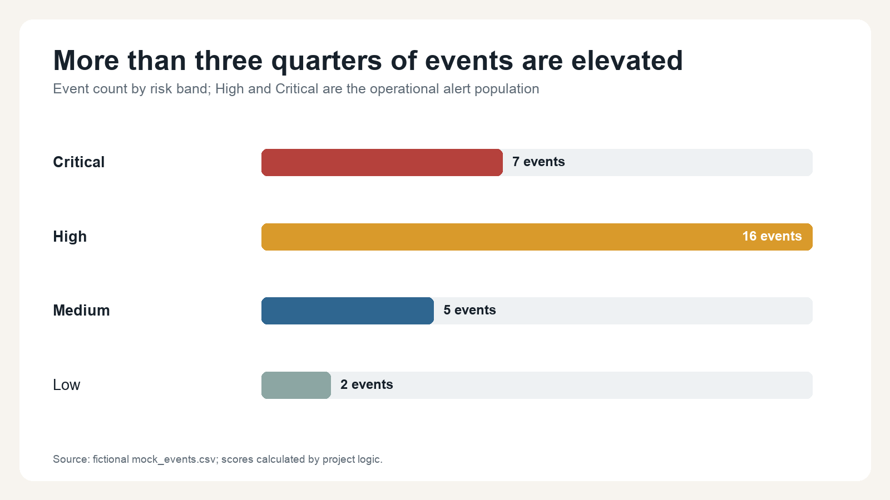
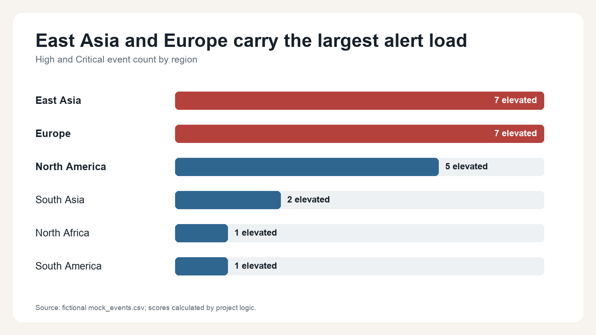
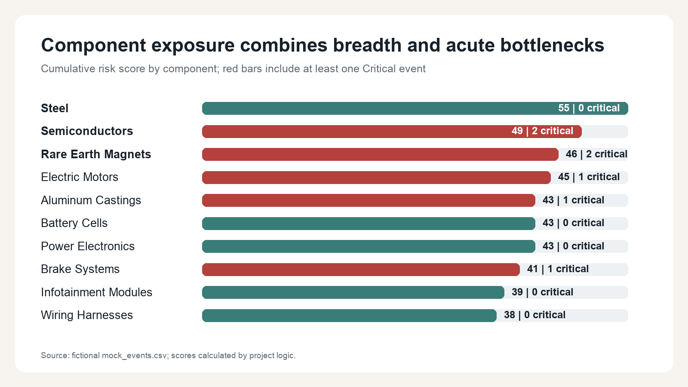
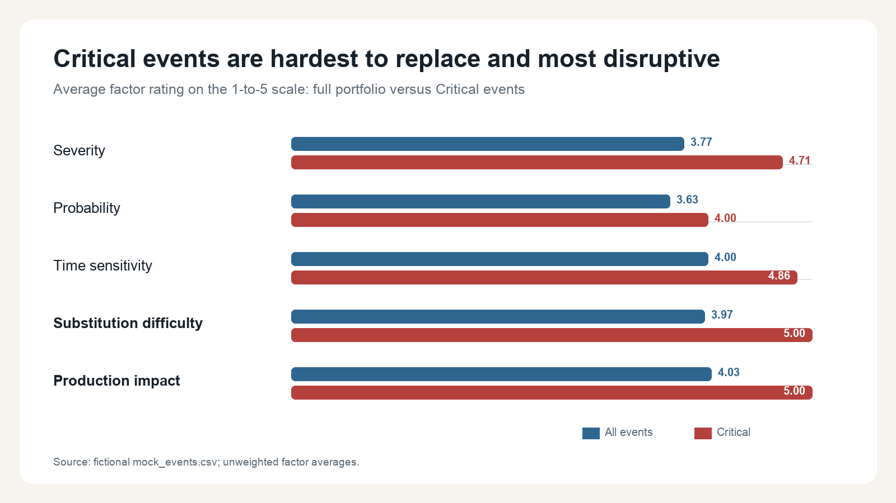

Where automotive operations should focus next
A prioritized view of the fictional supply chain risk portfolio in the Automotive Supply Chain Risk Intelligence Control Tower. Generated June 12, 2026 from 30 mock events dated January 8 through June 10, 2026.
Executive Summary
- The portfolio requires active intervention: 23 of 30 events (77%) are High or Critical, including 7 events requiring immediate escalation.
- The alert workload is geographically concentrated: East Asia and Europe each carry seven elevated events, together representing 14 of 23 alerts (61%).
- The most acute bottlenecks are hard to substitute: semiconductor and rare-earth magnet events account for 4 of 7 Critical events, while every Critical event averages 5.0 for both substitution difficulty and production impact.
Key Findings
1. Elevated risk is the portfolio norm, not the exception
High and Critical events make up 77% of the current event set. That means the operating challenge is not simply identifying alerts; it is imposing a consistent triage cadence so the seven Critical events receive immediate attention without allowing the 16 High events to age unnoticed.

The average score is 19.4, already inside the High band. A daily review should therefore manage a queue of exposure, ownership, and recovery milestones rather than treat each alert as a standalone exception.
2. East Asia and Europe should have dedicated response workstreams
East Asia and Europe each contribute seven elevated events. North America is the next-largest cluster with five, while the remaining regions account for four elevated events combined.

The geographic pattern supports separate workstreams: one focused on East Asian electronics, magnets, and trade exposure; another on European industrial capacity, quality, and labor continuity. Regional count alone does not estimate production loss, so these workstreams still need plant and inventory context.
3. Broad component exposure and acute bottlenecks are different problems
Steel has the highest cumulative score because it appears in three events, but none is Critical. Semiconductors and rare-earth magnets each have two Critical events, signaling a sharper short-term continuity risk despite fewer total records.

Operations should keep steel in the broader monitoring queue while assigning immediate engineering and sourcing actions to semiconductors, magnets, electric motors, aluminum castings, and brake systems, which contain the current Critical events.
4. Critical risk is driven by constrained alternatives and direct output impact
Across Critical events, substitution difficulty and production impact both average the maximum 5.0 rating. Time sensitivity averages 4.86, reinforcing that these are near-term continuity decisions rather than ordinary supplier-performance issues.

The response should pair commercial escalation with engineering validation. Capacity reservations alone will not resolve a part that cannot be substituted or qualified inside the disruption window.
Critical Event Queue
These seven events should be reviewed first, ordered by total score and then event date. The project recommendation engine assigns each one same-day cross-functional escalation.
| Event | Signal | Location | Exposure | Score |
|---|---|---|---|---|
| EVT-017 Apr 18, 2026 | Fictional semiconductor allocation cut | East Asia / Malaysia | Semiconductors Capacity | 25 |
| EVT-024 May 20, 2026 | Fictional casting tool failure | Europe / Italy | Aluminum Castings Capacity | 24 |
| EVT-001 Jan 08, 2026 | Fictional chip fab utility interruption | East Asia / Taiwan | Semiconductors Capacity | 24 |
| EVT-028 Jun 05, 2026 | Fictional motor plant strike vote | Europe / Germany | Electric Motors Labor | 23 |
| EVT-022 May 11, 2026 | Fictional magnet supplier cyber event | East Asia / China | Rare Earth Magnets Cybersecurity | 23 |
| EVT-009 Mar 07, 2026 | Fictional brake valve contamination | Europe / Germany | Brake Systems Quality | 23 |
| EVT-006 Feb 16, 2026 | Fictional rare-earth export review | East Asia / China | Rare Earth Magnets Geopolitical | 23 |
Recommended Next Steps
Open one Critical-event response room
Assign an executive owner and functional lead to each of the seven Critical events. Record inventory coverage, next production impact, supplier recovery date, and the next irreversible decision.
Run regional and component mitigation tracks
Separate East Asia and Europe workstreams. Prioritize semiconductor allocation, rare-earth magnet alternatives, motor continuity, casting tooling, and brake-system containment using the rule-based action library.
Add operational exposure data
Link events to suppliers, sites, part numbers, plants, vehicle programs, inventory days, and production volume. These fields are necessary to convert event priority into units or revenue at risk.
Further Questions
- Which Critical events have less inventory coverage than the credible supplier recovery time?
- Do the semiconductor and magnet events affect the same vehicle programs, creating correlated exposure?
- Which alternate parts or suppliers are already approved, and which require engineering validation or homologation?
- Should factor weights differ for safety-critical components, launch programs, or single-source suppliers?
Caveats and Assumptions
This is a fictional portfolio demonstration, not live operational intelligence. Ratings are manual and equally weighted. Events are evaluated independently, and the data has no supplier master, tier, plant, inventory, cost, recovery-time, vehicle-program, or revenue fields. Component cumulative score is therefore a prioritization proxy, not a forecast of business impact.